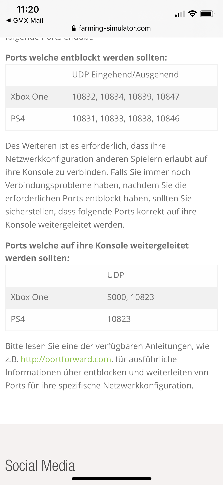
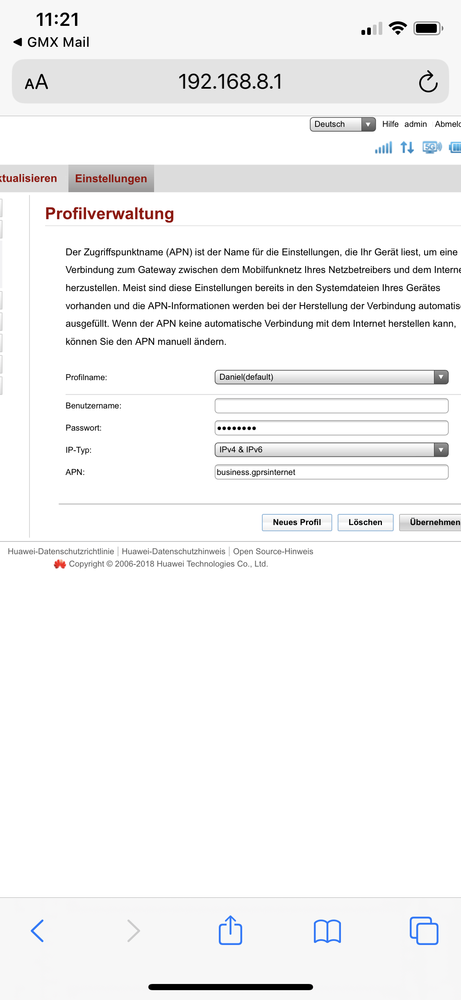
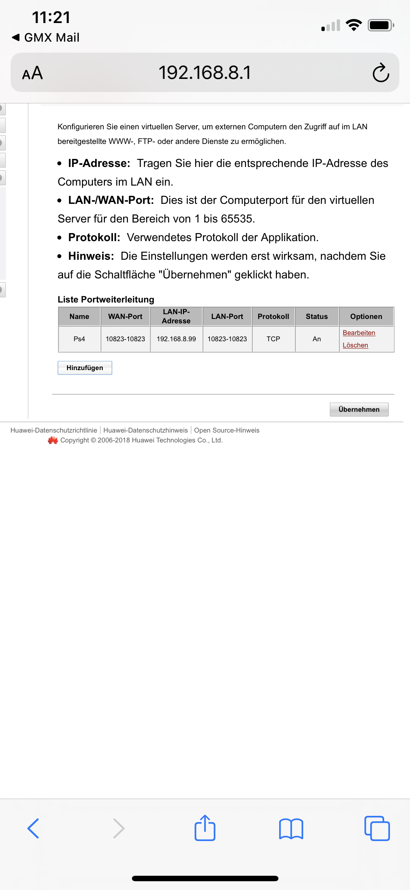

Hallo,
Gestern wollte ich mit einem Freund Ls19 im Multiplayer spielen. Ging erstmal nicht.
Habe dann in meinen Routereinstellungen das APN auf business umgestellt.
Als nächstes habe ich eine Portweiterleitung an meine Ps4 gemacht. (Port 10823 für Ls19, laut Internet).
Bin im Internet auf eine Anleitung gestoßen, in der steht, man sollte auch noch andere Ports für die Ps4 freigeben bzw. entblocken.
Meine Frage wäre nur, ob es einen Unterschied gibt, zwischen Ports weiterleiten und Ports freigeben für die Ps4, oder ist das dasselbe ?
danke schon mal,
Lg



Hallo,
nein also, keine Ahnung warum das auf dieser Seite so blöd beschrieben wird... zwischen freigeben und weiterleiten gibt es keinen Unterschied, es ist das selbe.
Was vielleicht die Seite meinen könnte ist, dass es Anbieter bzw Router gibt die bestimmte Ports blocken bzw nicht zulassen und deshalb schreiben sie, ja die gewissen Portst müssen offen sein.
Da bei uns aber keine Ports blockiert werden und du nichts mehr brauchst als den business.gprsinternet APN, sollte das reichen.
Lg,
DevRo
Vielen Dank für deine schnelle Antwort. Jetzt bin ich um einiges schlauer, bin nämlich gar nicht vertraut mit so Routereinstellungen.
Mich wundert es schon, dass ich das mit dem APN und der Portweiterleitung hinbekommen habe ^^
was ich vielleicht noch vergessen habe zu sagen; Der PS4 hab ich eine eigene IP zugewiesen und gestern als ich das APN und die Portweiterleitung fertig hatte, hat es auch geklappt gemeinsam im Multiplayer mit meinem Freund zu spielen.
aber nach 2h ging es wieder nicht.
Vielleicht sollte ich noch die restlichen aufgelisteten Ports für LS19 (Landwirtschaftsimulator 19) weiterleiten ??(die, die eigentlich bei den "Freigeben Ports" aufgelistet wurden).
Mein Kumpel hat den Server eröffnet, oder muss vielleicht er noch etwas beachten ?
lg
Was mir gerade auffällt aus deinen Bildern heraus, es wird verlangt das der Port 10823 UDP geöffnet ist, aber bei deiner Portweiterleitung ist er unter TCP offen. Das würde ich dir empfehlen zu ändern und zudem bei dem Profil trag noch als Benutzername: t-mobile und als Passwort: tm , ein.
Ansonste wenn es noch immer nicht funktioniert, nachdem du die beiden Sachen umgestellt hast, trag am Besten noch die restlichen Ports ein um auf nummer sicher zu gehen.
Lg,
DevRo
3 hours ago, DevRo said:
Was vielleicht die Seite meinen könnte ist, dass es Anbieter bzw Router gibt die bestimmte Ports blocken bzw nicht zulassen und deshalb schreiben sie, ja die gewissen Portst müssen offen sein.
Unter enblocken würde ich verstehen, dass die Ports z.B.: bei der Firewall freigegeben werden
")
Die Weiterleitung passiert auf eine Geräte und betrifft meistens nur eine Ressource
1 hour ago, DevRo said:
Was mir gerade auffällt aus deinen Bildern heraus, es wird verlangt das der Port 10823 UDP geöffnet ist,
Guter Tipp
")
vor 16 Stunden schrieb DevRo:
Was mir gerade auffällt aus deinen Bildern heraus, es wird verlangt das der Port 10823 UDP geöffnet ist, aber bei deiner Portweiterleitung ist er unter TCP offen. Das würde ich dir empfehlen zu ändern und zudem bei dem Profil trag noch als Benutzername: t-mobile und als Passwort: tm , ein.
ja vielen Dank, dass hab ich dann auch noch selbst gesehen und geändert - funktioniert tadellos ?
vor 16 Stunden schrieb DevRo:
Ansonste wenn es noch immer nicht funktioniert, nachdem du die beiden Sachen umgestellt hast, trag am Besten noch die restlichen Ports ein um auf nummer sicher zu gehen.
ja das werde ich noch machen, vielen Dank dir.
vor 16 Stunden schrieb DevRo:
{kind=link}
{kind=link}
{kind=link}